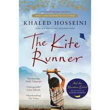
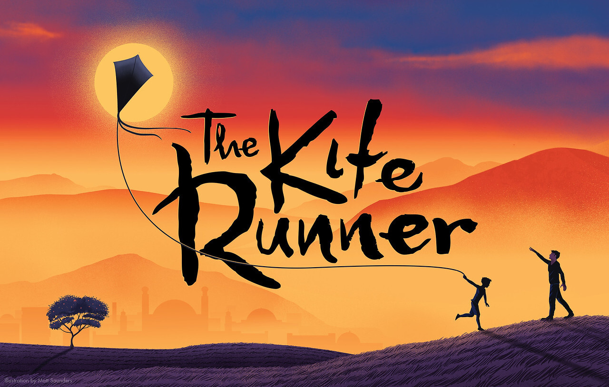
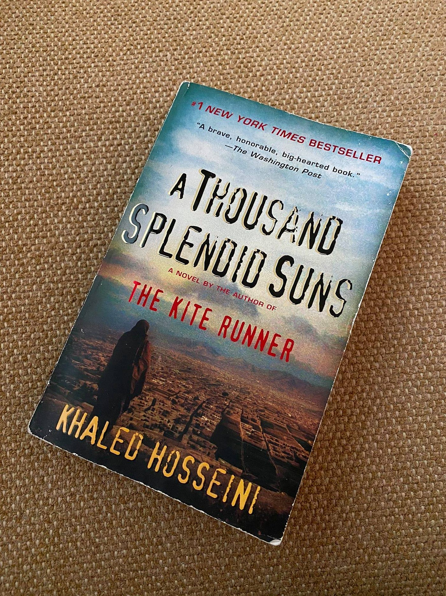
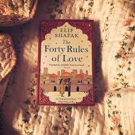
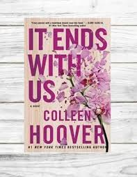
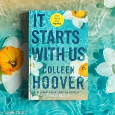
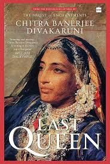

Books are referred to as a man's best friend. They are very beneficial for mankind and have helped it evolve. There is a powerhouse of information and knowledge. Books offer us so many things without asking for anything in return.
      